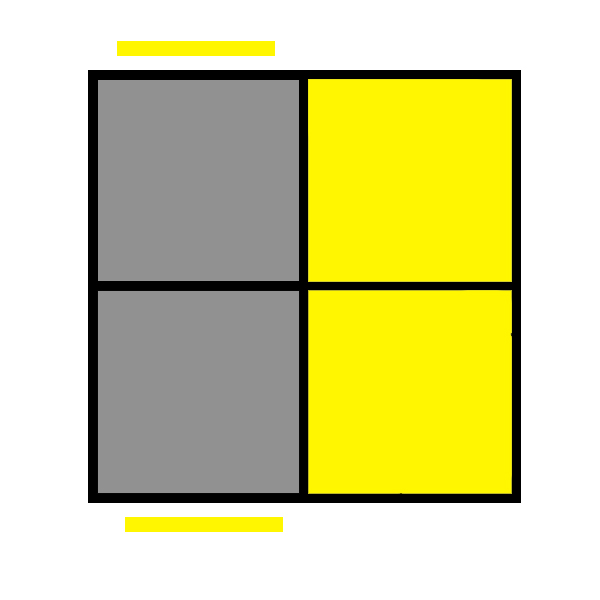
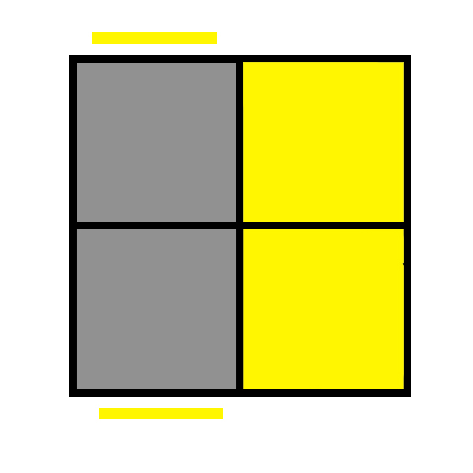

За почеток, би започнале како да ја гледаме коцката т.е како да ги читаме страните и алгоритмите. Ги имаме ознаките F, F' , U, U', R, R', L, L', D, D' B и B'.
Тие означуваат која страна од коцката треба да ја подместиме со цел да дојдеме до посакуваниот резултат. F - Front(предна), U - Upper(горна), R - Right(десна),
L - Left(лева), D - Down(долна) и B - Back(задна). Сите тие движења се прават како што се движат стрелките на часовникот, од лево на десно. Нивните спротивни движења се F', U', R', L', D' и B', кои се подместувања
спротивно од движењето на стрелките на часовникот т.е од десно на лево. Во прилог има и претстава на тие движења.


Во првата фаза ќе научиме како да го составиме првиот слој во правилен редослед. Во оваа фаза, сакаме да дојдеме до целосно бел слој и соодветни бои на ќошињата
како на сликата: 
Бидејќи оваа фаза се решава на интуиција, би наведел некои примери и како да размислите со цел да наместите некој дел.
1) 2) 3) 4)
Бидејќи оваа фаза се решава на интуиција, би наведел некои примери и како да размислите со цел да наместите некој дел.
1) 2) 3) 4)
Пример 1: R' U R U'
Пример 2: U R' U' R
Пример 3: R D B2 D' R'
Пример 4: U' B' U B R' U R U'
Штом сте стигнале до овде, значи го имате направено првиот слој, на сликите кои ќе бидат подолу прикажани коцката ќе биде гледана директно над па зависно од состојбата
која ја имате, користејќи го соодветниот алгоритам ќе дојдете до состојба така што горната површина ќе ви биде целосно жолта доколку сте започнале со решавање на белата страна.
1) 2) 3) 4) 5) 6) 7)
1) 2) 3) 4) 5) 6) 7)
Пример 1: R' U' R U' R' U2 R
Пример 2: L U L' U L U2 L'
Пример 3: R2 U2 R U2 R2
Пример 4: F [R U R' U'] [R U R' U'] F'
Пример 5: F [R U R' U'] F'
Пример 6: [R U R' U'] [R' F R F']
Пример 7: [F R U' R' U' R U R' F']
Честитки, дојдовте до последниот дел од решавање на една 2х2 рубикова коцка. Овде треба да извршете 1 алгоритам или да го повторите 2 пати зависно од состојбата која ја имате
добиена од предходниот алгоритам. Во прилог е испишан алгоритмот кој ви е потребен, а како да го искористите, ќе биде објаснето со сликите долу.
Сега вие би требало да имате состојба слична на оваа: каде ја гледаме сината страна.(Може наместо сината страна да биде друга боја)
Ја завртуваме коцката така што во лице да ни биде портокаловата страна, правиме еден U' потег па го искористуваме алгоритмот: L' U R' D2 R U' R' D2 R2. Во ситуација да немаме таква состојба, го извршуваме алгоритмот со болдираните букви, па ќе ја добиеме горенаведената состојба.
Ја завртуваме коцката така што во лице да ни биде портокаловата страна, правиме еден U' потег па го искористуваме алгоритмот: L' U R' D2 R U' R' D2 R2. Во ситуација да немаме таква состојба, го извршуваме алгоритмот со болдираните букви, па ќе ја добиеме горенаведената состојба.